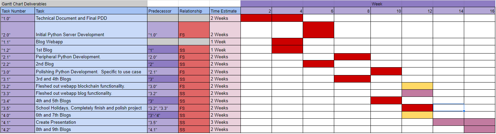

Progress Chart
Welcome to the sixth progress entry of LogiChain!
Important Updates
Since the last progress entry, here are the most pressing updates:
We are back nto the school term! this progress entry covers the work done on the project over the holidays.
Over the break, I have created a nice landing page for LogiChain along with a new work-in-progress model for the web-app (now known as a LogiDesk) which will be explored in the next blog post.
Heres the latest gaant chart updates.

Challenges
A new look
Working on this project over the holidays has been somewhat free of challenges, the biggest challenge I faced was staying motivated to work consistently on my last term break for high school.
More specifically, when I needed to troubleshoot the alerts system where there was no extreme need to solve the problem quickly, so I sat on it for three days and ultimately lost time where I could have been productive.
Positives
Starting Bases Covered
With these challenges being said, it is still the holidays so im still very grateful to myself for the extra work which has been done, allowing me to spend more time doing other subjects and of course make even further improvements on LogiChain.
Thanks to my ticketing dashboard, I have a good idea of what’s to come next and im very excited to pursue these tasks to make a very polished finished product.
Timeline of Progress
17/09/21
We are getting back to working on IT through the holidays, today i finished setting up a nice ticketing system managed by Jira software, which is owned by Atlassian. This and the new digital organization scheme i will be using, named PARA are building a foundation for the rest of the final project to be created on. This initial infrastructure will help to efficiently build the rest of the project in a methodical and planned manner.
26/09/21
Hello, since my last entry, I have made a new landing page and login for logichain, connected them to the python server and I am now working on creating the new ‘LogiDesk’, which is what I am calling the actual supply chain logistics app.
It has been a fairly slow week, mainly due to the fact that I’m just making HTML pages and because its the first week of the holidays, I’ve been distracted a fair bit. But coming back into writing actual code, I am growing more excited about the production and am expecting a lot of progress to be made.
The Jira ticketing, project management app has proven to be really useful for task organization and definitely takes away a lot of stress from the production of tasks, which gives me more time to write elegant code. Jira takes away stress in that I dont feel the need to rush current tasks to get into the next task while its still fresh in my mind, simply because I can easily just write down that next task and have it presented to me when the time is right.
28/9/21
Hello, today I have finished the signin/signup server functionality, to sign users up under specific nodes, unlike the prototype, this node cannot be changed and has its own wallet for XRP. I have started production on the ‘landing’ user interface of the LogiDesk, but once this is done, I will be working on the flow of products and assets through LogiChain.
2/10/21
After 3 days of unmotivated troubleshooting of JS alerts, I have had time to get the full picture of the problem and even learnt something new about JQuery, this is the great thing about not rushing assignments.